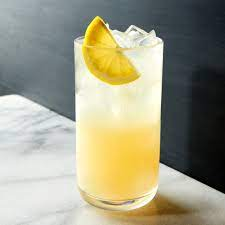

Tom Collins

Description
A carbonated and boozy take on lemonade. While Gin is not currently at the height of
polularity, the Tom Collins is a shade of cool that never goes out of style.
Ingredients
- Gin
- Ice
- Club Soda
- Lemons
- Simple Syrup
Steps
- Add an ounce of lemon juice to the glass
- Fill the glass with small ice cubes, and add three quarters of an ounce of simple syrup
- Add two ounces of Gin
- Top the glass with club soda and lightly incorporate the ingredients together with a bar spoon
- Garnish with a lemon wheel
Home